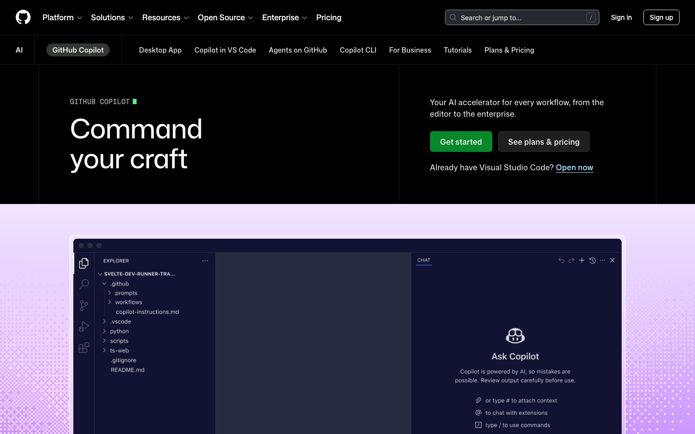
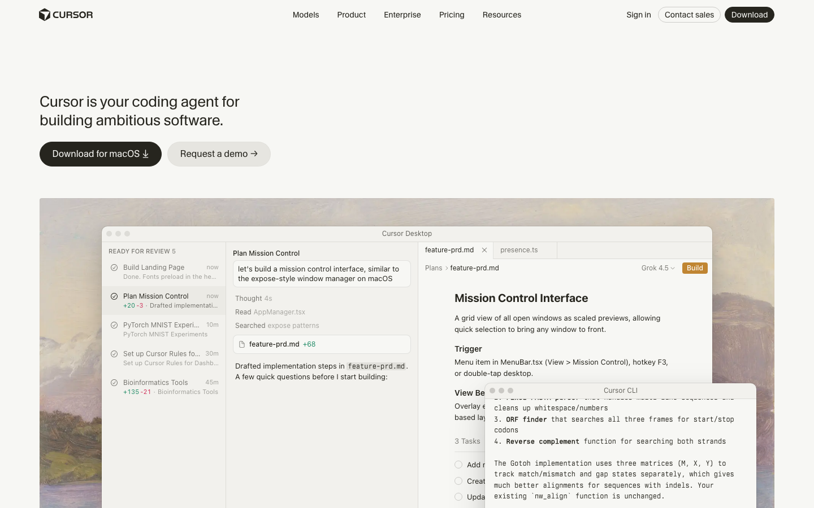
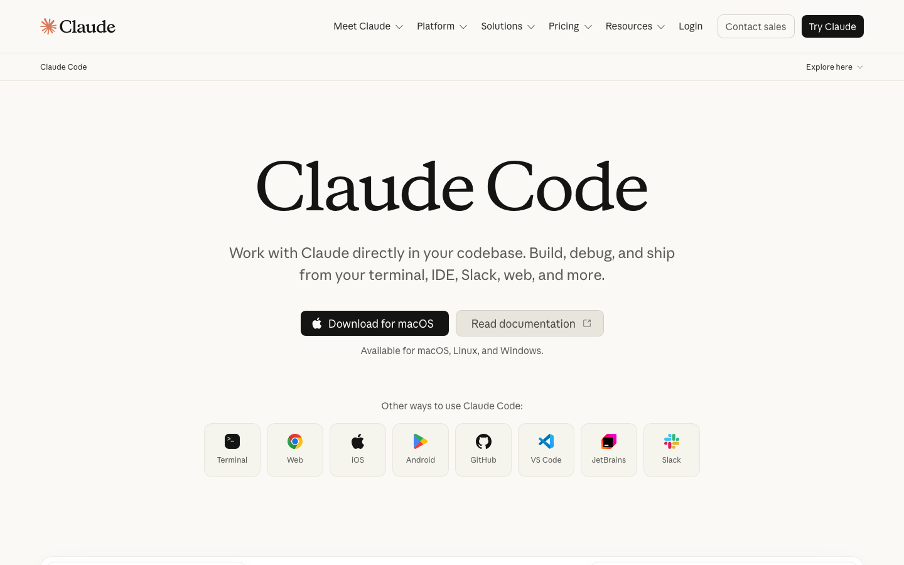

AI CODING / 比較ガイド
AIコーディングサービス比較｜Copilot・Cursor・Claude Code・Replit【2026年】
AIコーディングは、補完を速くしたいのか、複数ファイルの実装を任せたいのか、環境ごと試作したいのかで選択が変わります。公式価格・usageと国内外レビューを照合し、用途別の結論を出します。

- 補完・PR：GitHub Copilot。Proは$10/月で、GitHub中心の開発に最も入りやすい選択です。
- 複数ファイル編集：Cursor。Proは$20/月ですが、モデル利用量を超えると従量課金が膨らみます。
- 端末で自律作業：Claude Code。Proは$20/月で、調査から実装・テストまで続けたい人向けです。
- 試作・公開：Replit。Coreは$25/月で、環境構築を省けますがAgent creditsの消費が早い依頼には不向きです。
料金・usage・コスパ比較（2026年7月31日時点）
AIコーディングのusageは、補完回数ではなくチャット・エージェント・モデル利用のクレジットで減ることが増えています。料金と同時に、含まれる利用量と追加課金の仕組みを比較します。
比較シナリオ：既存リポジトリの小さな修正を週10件、月1回の機能追加を行う開発者を基準にしました。補完とPR中心ならCopilot、複数ファイルの実装ならCursor、端末で調査からテストまで続けるならClaude Code、環境構築を省いて試作を公開するならReplitが、支払額に対して得られる作業量を読みやすい選択です。
| サービス（公式） | 代表プランと月額 | 含まれるusage | 実効コスト | コスパの結論 |
|---|---|---|---|---|
| GitHub Copilot | Free $0、Pro $10、Pro+ $39、Max $100 | Freeは2,000補完/月。Proは$15、Pro+は$70、Maxは$200のAI credits/月 | Proは固定$10+credits超過時の従量 | GitHub利用者の補完・レビューなら最も始めやすい |
| Cursor | Hobby無料、Pro $20/月、Teams $40/ユーザー/月 | Pro+はProの3倍、Ultraは20倍のAgent上限。全プランでモデル利用量を消費 | 含有量を超えるon-demandは後払い | 複数ファイルの編集量が多いほど価値、請求の振れ幅に注意 |
| Claude Code | Free $0、Pro $20/月（年払い$17/月）、Max $100〜 | ProはClaude Code込み。MaxはProの5倍または20倍利用 | 定額のほかAPIはモデル・token量で変動 | 大きなリポジトリを端末で進めるなら作業量に対して強い |
| Replit | Starter無料、Core $25/月（年払い$20）、Pro $100/月（年払い$95） | Core $25、Pro $100のAgent credits/月。Coreは並列Agent 2、Proは10 | Agentの複雑さでcredit消費、追加利用は従量 | 環境構築・公開の時間を買うサービス。小規模試作で高コスパ |
4サービスの実力と口コミ

GitHub Copilot：既存IDEとGitHubを変えない
補完、チャット、コードレビュー、Cloud Agentを一つの契約で使えます。GitHubにコードとIssueが集まるチームほど導入が軽く、Proの月10ドルは入口として分かりやすい価格です。海外報道と開発者コミュニティでは、agent・reviewの利用でcreditsが早く減ること、モデルごとの消費量が読みにくいことが不満として目立ちます。

Cursor：エディタ内の複数ファイル編集
VS Code系の操作感で、プロジェクト全体を読ませて編集・テストまで進めます。TechRadarは大規模な複数ファイル作業とAgent体験を高く評価する一方、レガシーコードで局所的に正しい変更が別の箇所を壊すこと、重いモデルで請求が膨らむことを弱みとして挙げています。Capterraや開発者コミュニティでも、精度と速度への評価と、使用量の予測しにくさが同時に見られます。

Claude Code：ターミナルで一連の作業を任せる
コードベースの探索、編集、テスト、Issue対応をターミナルから一続きで進めます。長いコンテキストと大きな変更への対応が強みで、ProならClaude Codeを含みます。一方、IDEの補完や視覚的な差分が中心の人には学習負担があり、MaxやTeam Premiumは月額が大きくなります。G2/Capterraのレビューでは、深い理解と自律性を評価する声と、曖昧な指示では手戻りが増えるという声が並びます。
Replit：ブラウザで試作から公開まで
環境構築なしでAgentにアプリを作らせ、ブラウザから公開できます。G2とCapterraでは自然言語からの試作速度が好評ですが、複雑な依頼でAgent creditsが早く消える、追加課金が読みにくいという不満もあります。既存リポジトリの精密な保守より、企画の検証や小さな社内ツールの公開に向きます。
強み・弱み比較表
| サービス | 強み | 弱み | 向く人 | 向かない人 |
|---|---|---|---|---|
| GitHub Copilot | 補完、PR、GitHub連携、低い入口価格 | Agentのcredits消費、モデルごとの単価 | GitHub中心の開発者 | IDE外で長いタスクを丸ごと任せたい人 |
| Cursor | コードベース理解、複数ファイル編集、Agent | 従量課金、変更の広がり、上位価格の表示差 | エディタで日常的に開発する人 | 固定費だけで予算を確定したい人 |
| Claude Code | 長い文脈、端末操作、IssueからPRまで | IDEの視覚性、Max/Teamの価格 | 大規模コードを端末で扱う人 | 補完だけを軽く使う人 |
| Replit | 環境構築不要、試作、公開、並列Agent | credits消費、既存コードの精密保守 | 個人開発・新規プロトタイプ | 複雑な既存基盤を厳密に保守する人 |
用途別の決定ルール
Copilot
GitHubのIssueとPRを中心に、日々の入力支援を安く足したい場合。
Cursor
既存コードを読み、編集・テストまでエディタ内で進めたい場合。
Claude Code
調査から実装、テスト、PRまで端末で連続させたい場合。
Replit
環境構築を省き、アイデアをブラウザで動く形にしたい場合。
「毎日使う補完」ならCopilot、「変更量の大きい開発」ならCursorかClaude Code、「検証用アプリ」ならReplitです。モデル利用量が多いチームは、固定費だけでなくcreditsの消費上限も予算へ入れると選択を誤りません。
自社の開発業務へ最短経路で組み込む
AIコーディングの導入は、ツールを配るだけでは終わりません。Issueの書き方、リポジトリの読み方、テストの置き場、PRの流れを一つの開発業務としてつなぐ必要があります。AI顧問室は、現在の工程から自動化対象を切り出し、最適なサービスと運用へ組み込みます。
- GitHub Copilot料金 / ITPro価格分析 / Tom's Hardware
- Cursor料金 / Cursor Capterra / TechRadar比較レビュー
- Claude料金 / Claude Code G2 / Claude Code独立レビュー
- Replit料金 / Replit G2 / Replit Capterra
価格・利用量・レビューは2026年7月31日に取得しました。
よくある質問
無料枠だけで使えますか？
4サービスとも無料枠があります。補完中心ならCopilot、エディタ体験ならCursor、端末の試用ならClaude Code、公開までの試作ならReplitが入口です。
コスパを一言で言うと？
補完はCopilot、複数ファイル編集はCursor、長い自律タスクはClaude Code、環境構築を省く試作はReplitが、それぞれの作業量に対してコスパを出しやすい選択です。
AI顧問室では何をしてくれますか？
開発工程を分解し、どのサービスをどの作業へ接続するか、運用の形まで設計します。